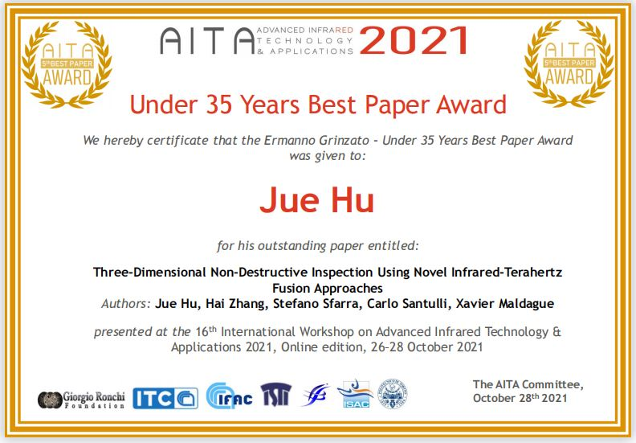

胡珏
juehundt / 成都
基本信息
- 胡珏 / 男 / 28岁
- CET-6
- 在读博士
联系方式
技能点
二维码
教育经历
-
电子科技大学 - 仪器科学与技术专业（博士）
研究方向 基于多物理成像与特征融合的缺陷定量评估技术研究，期间在CSTE、NDT&E International等高水平刊物上发表SCI检索论文7篇（其中以第一作者、通讯作者身份6篇），投稿国际会议4篇（FENDT2019，WCNDT2020,SHMNDT2020,AITA2021)。
-
电子科技大学 - 测控技术与仪器专业（本科）
专业排名 7/342，期间取得四川省“挑战杯”三等奖，国家励志奖学金2次，电子科技大学“亚龙奖学金”1次。
工作经历
-
[经历1]浙江亚龙教育装备股份有限公司－系统开发工程师（实习）
- 主持可编程数字电源设计项目，独立承担并完成可编程电源的设计与开发。项目采用技术栈 Labview，实现 数字化可编程电压电流输出。
-
[经历2]拉瓦尔大学CVSL实验室－Research Intern
- 深度参与基于连续波太赫兹的文化遗产动态扫描检测项目开发工作，完成连续波太赫兹动态扫描实验系统搭建、 连续波太赫兹动态扫描图像重构算法设计、基于深度学习的曝光不均匀数据融合补偿算法设计等研究内容。项目采用技术栈Matlab+Pytorch。 博客文章
- 主要参与基于红外与太赫兹的植物纤维复合材料缺陷评估项目，实现多模态特征提取、基于深度学习的红外热成像与太赫兹融合、 植物纤维复合材料的层析成像等关键技术研究。项目采用技术栈Matlab+Pytorch。
- 主要参与基于多模态的文化遗产多层次评估表征项目，实现多模态特征提取、基于深度学习的多模态多物理场数据融合、 文化遗产的多层次损伤评估等关键技术研究。项目采用技术栈Matlab+Pytorch。
- 深度参与基于特征提取-特征选择-特征融合的无损检测算法框架开发工作，完成算法设计、多数据集比较以及国家重大仪器专项钢轨多物理场巡检数据实测。 项目地址
个人项目
-
[项目1]基于深度学习的缺陷定位技术研究 Demo
- 技术栈：Matlab+Tensorflow
-
[目标]实现金属表面微小缺陷的精准定位
[团队]与国家“千人计划”田贵云教授，电子科技大学高斌教授合作
[贡献]开发基于时-空数据的金属表面缺陷的定位算法，在多种试件上进行测试，验证算法的鲁棒性
[成果]发表SCI检索 论文1篇，FENDT2019会议人工智能专场特邀报告
-
[项目2]基于连续波太赫兹的文化遗产动态扫描检测 Demo
- 技术栈：Matlab+Pytorch
-
[目标]实现文化遗产的连续波太赫兹动态扫描检测
[团队]同Canada Research Chair红外热成像领域泰斗Xavier Maldague教授、多伦多大学张海博士合作
[贡献]完成连续波太赫兹动态扫描实验系统搭建、 连续波太赫兹动态扫描图像重构算法设计、基于深度学习的曝光不均匀数据融合补偿算法设计等研究内容
[成果]在无损检测领域顶刊NDT&E INT发表 论文，无损检测领域顶会WCNDT2020会议Oral论文接收
-
[项目3]基于红外与太赫兹的植物纤维复合材料缺陷评估项目 Demo
-
[项目4]基于稀疏分解的碳纤维-玄武岩纤维复合材料热成像冲击损伤评估 Demo
- 技术栈：Matlab
-
[目标]实现碳纤维-玄武岩纤维复合材料的热成像稀疏特征提取与冲击损伤评估
[团队]与国家“千人计划”田贵云教授、Canada Research Chair红外热成像领域泰斗Xavier Maldague教授、意大利拉奎拉大学Stefano Sfarra教授、多伦多大学张海博士合作
[贡献]比较不同的稀疏分解算法在四种铺层方式的碳纤维-玄武岩纤维复合材料上光激励脉冲热成像数据上的处理结果，同时对比了超声与振动热成像的结果， 分析了不同稀疏分解算法对于热成像数据增强的原因
[成果]发表SCI检索 论文1篇
论文成果
-
Hu J, Zhang H, Sfarra S, Santulli C, Tian G and Maldague X. Novel infrared-terahertz fusion 3D non-invasive imaging of plant fibre-reinforced polymer composites[J]. Composites Science and Technology, Elsevier, 2022: 109526. (SCI检索中科院一区，IF:9.879)
-
Hu J, Zhang H, Sfarra S, Pivarčiová E, Yao Y, Duan Y, Ibarra-Castanedo C, Tian G and Maldague X. Autonomous dynamic line-scan continuous-wave terahertz non-destructive inspection system combined with unsupervised exposure fusion. NDT E Int. 2022, 132, 102705.(SCI检索中科院一区，IF:4.683)
-
Fernandes H, Zhang H, Quirin S, Hu J, Schwarz M, Jost H and Herrmann H. Infrared thermographic inspection of 3D hybrid aluminium-CFRP composite using different spectral bands and new unsupervised probabilistic low-rank component factorization model[J]. NDT & E International, Elsevier, 2022, 125: 102561. (SCI检索中科院一区, IF:4.683)
-
Hu J, Zhang H, Sfarra S, Gargiulo G, Avdelidis N P, Zhang M, Yang D and Maldague X. Non-destructive imaging of marqueteries based on a new infrared-terahertz fusion technique[J]. Infrared Physics & Technology, 2022: 104277. (SCI检索中科院二区，IF:2.997)
论文获奖
-

座右铭
瞻天见大，观海得深。